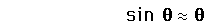
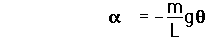
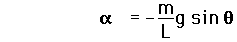
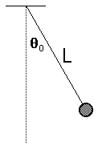

Large Amplitude Pendulum
The usual solution for the simple pendulum depends upon the approximation

which gives equation

but for angles for which that approximation
does not hold, one must deal with the more
complicated equation

|  |
The detailed solution leads to an elliptic integral.
That solution can be approximated by a series, for
which the first three terms are
|
Index
Periodic motion concepts |